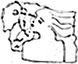

پذيرش > كوچه به كوچه > ساده و بی تکلف در یک عصر بارانی زنجان


 ساده و بی تکلف در یک عصر بارانی زنجان ساده و بی تکلف در یک عصر بارانی زنجان
11 اردیبهشت 1387 - پریسا پناهی - زنجان - نسخه قابل چاپ
معمولا گزارشی نمی دهم ولی تمام گزارش ها را می خوانم. شاید این کمی بد باشد. هم برای من و هم برای اطرافیان من. این موضوع در مورد سایت تغییر برای برابری هم صادق است. هر بار که سری به آن می زنم، بدون هیچ اتلاف وقتی به سراغ کوچه به کوچه می روم. با اینکه هیچ تجربه فیزیکی از برخورد با بچه ها ندارم ولی به قدری ساده و بی تکلف شرح واقعه می دهند که گوئی سالیان درازی است که آنها را می شناسی. از همه چیز مهم تر اخلاصی است که در فعالیت های اجتماعی شان به چشم می خورد .
مدت ها بود که با کمپین آشنا بودم . ابتدای این آشنایی هم بر می گردد به جلسات و کارگاه های آموزشی در دانشگاه. شاید بتوانم بگویم در به در به دنبال دفترچه کمپین بودم و نمی یافتم و با نگاه های دزدکی و به ظاهر بی تفاوت سعی می کردم به دنبال فعالان این جنبش در دانشگاه باشم که نشد! مدتی بر همین منوال گذشت و ما همچنان در تب دفترچه ای می سوختیم. تا اینکه از پس مرارت های فراوان و جان فرسا توانستم مطالبی از کمپین پیدا کنم و از طریق وب گردی و مطالعه مقالات توانستم خرده اطلاعاتی در این زمینه کسب کنم. از پس هر پیروزی، مدتی در سکون و بی خبری طی می شد تا اینکه دوباره خبری از بی عدالتی ها به اصل ماجرا متوجهم می کرد. از پس این تلاش هایم بالاخره توانستم با تعدادی از بچه ها تماس بگیرم و از نحوه فعالیت در کمپین جویا شوم. تا اینکه بعد از برخورد گرمی که با یکی از بچه ها داشتم ، تعدادی دفترچه به دستم رسید. آن روز جلسه توجیهی خوب و پرمحتوایی برای من بود. بسیاری از سوال هایی که در طول این مدت در ذهن داشتم برایم تا حدی حل شد. فرصت مناسبی بود تا بتوانم از نزدیک شاهد فعالیت زنان این کمپین باشم.
عصر بارانی و سردی بود . تصمیم گرفتیم به یکی دو تا از پاساژ های شهر برویم تا از این طریق بتوانیم با افراد در باب کمپین و فعالیت هایش صحبت کنیم . تجربه ناب و به یاد ماندنی برایم بود . با افراد گوناگونی برخورد داشتیم . اکثریت این افراد را هم خانم ها تشکیل می دادند . از پس برخورد ها و صحبت هایی که سعی در معرفی و شناساندن این فعالیت مدنی داشتیم ، افراد گوناگون با روحیات کاملا متنوعی را می دیدیم که گاهی با توجیهات احمقانه خود سعی در تمسخر و بی اهمیت جلوه دادن خود و جنس خود و از همه مهمتر حرکت ما بودند . در چنین مواردی تنها حضور موثر سمیه بود که مرا به صبر دعوت می کرد . گاهی می شد زنی یا دختری را دید که تسلیم محض نظام مرد سالار خانه و جامعه خود شده است و چیزی جز احساس افسوس برایمان باقی نمی گذاشت . اینجا بود که مصمم شدم تا این کار فرهنگی و اجتماعی را به صورتی کاملا ریشه ای از سر بگیرم و بتوانم ترس ها و تردید های زن به پستو رانده شده ی ایرانی را بشناسم و برای کمرنگ تر کردن آن تلاش کنم . باشد که در این راه تمام زنان آگاه جامعه ایرانی از برای بهبود هرچه بیشتر کمبود ها و کاستی های یک جامعه آگاه گام بردارند .
به امید ایرانی آباد ...
ارسال به
بالاترین
،
توییتر
،
فریندفید
،
فیسبوک
در همين بخش :
 روايت بيست و پنجمين شهريور / نرگس طیبات روايت بيست و پنجمين شهريور / نرگس طیبات
وقتی آتش خاموش شود/فرشته نوبخت
آن گاه که زن شدم / ویژه نامه 8 مارس 1391
چیزی زیر پوست این شهر می جوشد / دلارام علی
گرسنگی / وبلاگ سیب و سرگشتگی
ديگر بخش ها :
طرح یک میلیون امضا
|
مقالات
|
سایت نوشته ها
|
اخبار
|
گزارش كمپين
|
گفت و گو
|
علیه سکوت
|
كوچه به كوچه
|
نامه های شما
|
گزارش ویژه
|
گفتگو با اعضا
|
ویژه سالگرد کمپین
|
تصویر برابری
|
دل آرام علی
|
تریبون
|
مقالات
|
تاریخ شفاهی
|
خارج از چارچوب
|
کتابخانه
|
درباره کمپین
|
کمپین در شهرها
|
کمپین در بند
|
صدای تغییر
|
ویژه 22 خرداد
|
لایحه حمایت از خانواده
|
گالری
|
عشا مومنی
|
امیر یعقوبعلی
|
خدیجه مقدم
|
راحله عسگری زاده و نسیم خسروی
|
پروین اردلان،جلوه جواهری، مریم حسین خواه، ناهید کشاورز
|
زینب پیغمبرزاده
|
سعیده امین، سارا ایمانیان، محبوبه حسین زاده، ناهید کشاورز و همایون نامی
|
احترام شادفر
|
نسیم سرابندی زاده،فاطمه دهدشتی
|
وبلاگ مهمان
|
پرونده خرم آباد
|
دستگیری ها
|
مریم مالک
|
پرستو اللهیاری
|
مهرنوش اعتمادی
|
سمیه رشیدی
|
Other Languages
|
همراهان
|
«فراخوان کمپین ده روز با بهاره هدایت»
| English
|